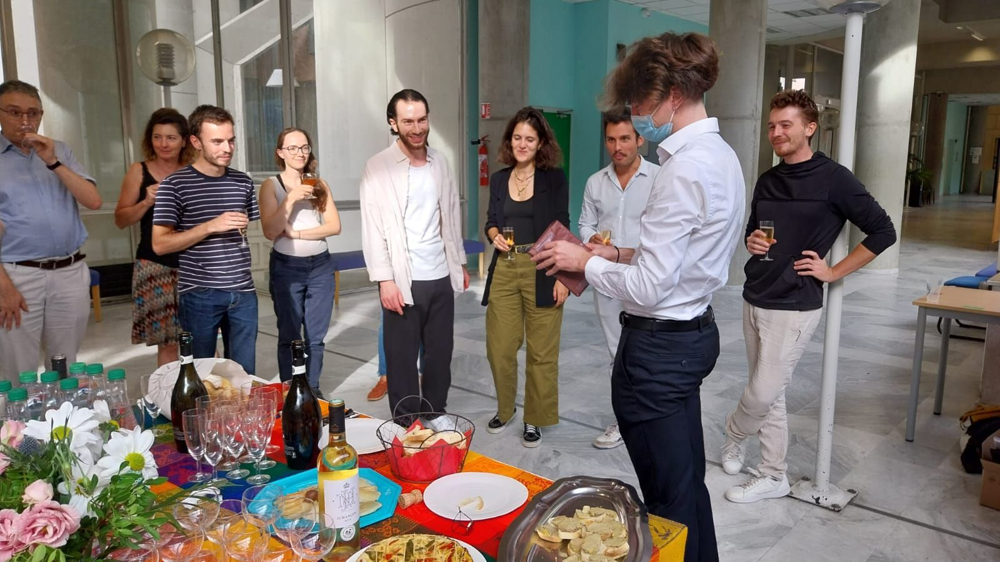
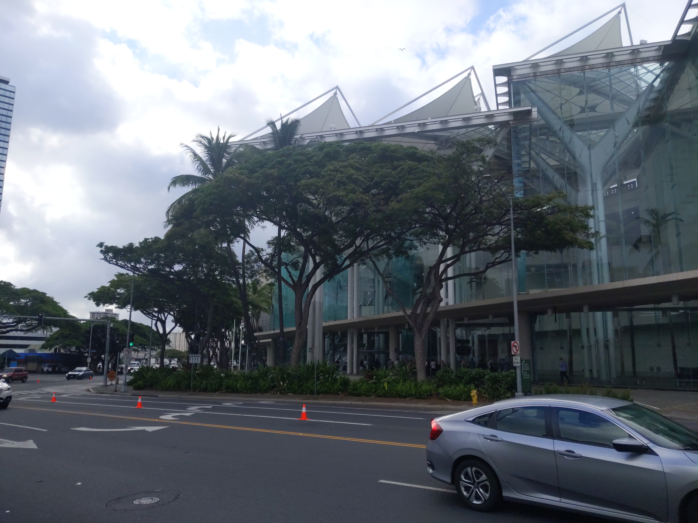
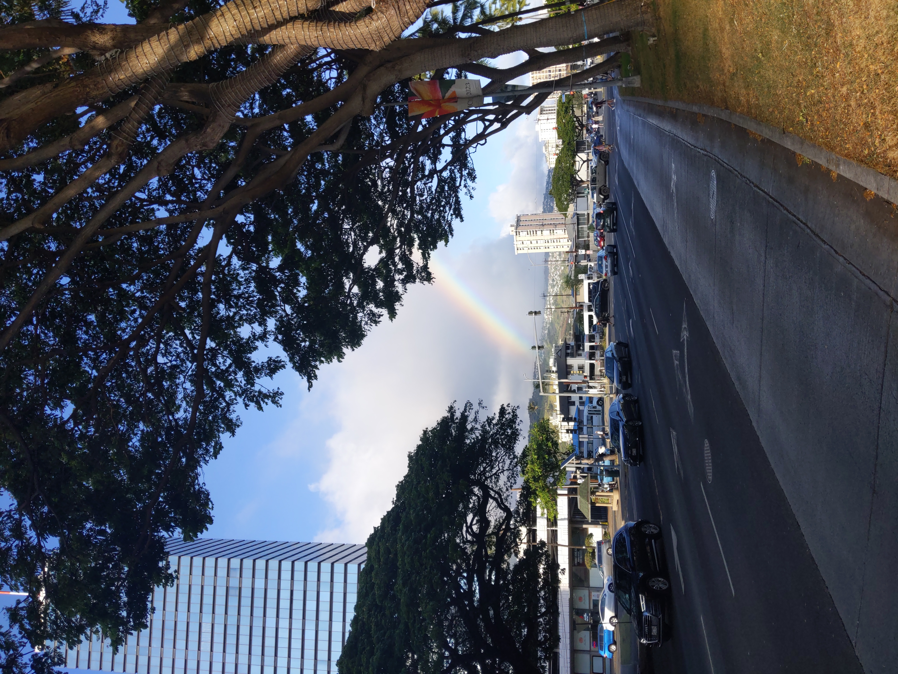

Clément Lalanne
Maître de Conférences (eq Assistant Professor) in Applied Mathematics at Paul Sabatier University.
I am part of the Statistics and Optimization team of the Institute of Mathematics of Toulouse.
My work focuses on Differential Privacy, Learning Theory, Statistics and Optimization.
Contact : clement.lalanne@math.univ-toulouse.fr
News
- * September 2024 I am thrilled to announce that I started a new position as a Maître de Conférences (french equivalent of Assistant Professor) at Université Toulouse 3 Paul Sabatier in Applied Mathematics. I will be pursuing my research within the Statistics and Optimization team of the Institut de Mathématiques de Toulouse.
- * July 2024 What a week at ICML 2024 in Vienna, Austria where I presented a poster for our article Privately Learning Smooth Distributions on the Hypercube by Projections. Congratulations to the researchers for the high level of the presentations and to the organization team.


- * May 2024 Our article Privately Learning Smooth Distributions on the Hypercube by Projections just got accepted to the 41st International Conference on Machine Learning. Looking forward to present our work in Vienna. Huge thanks to my coauthor Sébastien Gadat, and to the reviewers for the useful inputs and suggestions.
- * October 2023 Since October, I started a new position as a postdoctoral researcher in Mathematics with Jérôme Bolte and Sébastien Gadat at Toulouse School of Economics, Université Toulouse 1 Capitole !
- * October 2023 This is with great pleasure that I announce that on October 4th, I successfully defended my PhD thesis in computer science titled "On the tradeoffs of statistical learning with privacy" at ENS Lyon. Huge thanks to anyone that made this possible, and in particular to my advisors Aurélien Garivier and Rémi Gribonval, to the referees Aurélien Bellet and Béatrice Laurent-Bonneau, and to the president of the jury Élisa Fromont.

- * September 2023 Just got back from GRETSI 2023 in beautiful Grenoble, France. Really interesting to attend this human-size signal-processing conference, and to see presentations outside of my usual topics of interest. Congrats to anyone that presented and to the organization team. I am still blown away by the amazing performance of the theater troupe Le Gravillon for their play "Point de Bascule" (social activity during the conference) !
- * August 2023 Our article About the Cost of Central Privacy in Density Estimation just got accepted for publication in the journal Transactions on Machine Learning Research. Huge thanks to my coauthors Aurélien Garivier and Rémi Gribonval.
- * July 2023 Just got back from ICML 2023 in beautiful Honolulu, HI, USA where I presented a poster for our article Private Statistical Estimation of Many Quantiles. On scientific and human points of view, it was amazing to meet so many passionate people. Congratulations to the researchers for the high level of the presentations and to the organization team.
 


- * July 2023 I am glad to announce that I am a laureate of the 2023 "Agrégation Externe de Mathématiques" (as an independent candidate during my PhD).
- * June 2023 Our article Private Quantiles Estimation in the Presence of Atoms just got accepted for publication in the journal Information and Inference. You will soon be able to read it with a new template and some important updates thanks to the help from the reviewers. Also, huge thanks to my coauthors Clément Gastaud and Nicolas Grislain from Sarus Technologies, Aurélien Garivier and Rémi Gribonval.
- * June 2023 Our article/experiment report Sparsity in neural networks can improve their privacy just got accepted to the french XXIXème Colloque Francophone de Traitement du Signal et des Images (GRETSI 2023 Conference). Huge thanks to the reviewers for their suggestions. Also, huge thanks to my coauthors Antoine Gonon, Léon Zheng, Quoc-Tung Le, Guillaume Lauga and Can Pouliquen. We are curently working on a scaled and extended version of this article.
- * June 2023 Huge thanks to Dataiku for hosting the Privacy Preserving Machine Learning workshop on June 14th 2023 in Paris, and to anyone that contributed to the organization. Congratulations to everyone that presented for the high quality of the presentations !
- * April 2023 Our article Private Statistical Estimation of Many Quantiles just got accepted to the fortieth International Conference on Machine Learning. Looking forward to present our work in Honolulu. Huge thanks to my coauthors Aurélien Garivier and Rémi Gribonval, and to the reviewers for the useful inputs and suggestions.
- * April 2023 Our article On the Statistical Complexity of Estimation and Testing under Privacy Constraints just got accepted for publication in the journal Transactions on Machine Learning Research. You will soon be able to read it with a new template and some important updates thanks to the positive inputs from the reviewers. Also, huge thanks to my coauthors Aurélien Garivier and Rémi Gribonval.
- * November 2022 Huge thanks to Meta for hosting the Privacy Preserving Machine Learning workshop on November 9th 2022 in Paris, and to anyone that contributed to the organization. Congratulations to everyone that presented for the high quality of the presentations !
- * June 2022 Huge thanks to Sarus Technologies for hosting the Privacy Preserving Machine Learning workshop on June 8th 2022 in Paris, and to anyone that contributed to the organization. Congratulations to everyone that presented for the high quality of the presentations !
Publications
Teaching
- * Mathematics of Machine Learning (M2 MAPI3 Paul Sabatier) : Course 2024-2025, Projects 2024-2025.
- * 2022-2023 Competitive Programming (L3 ENS Lyon) : On site, room E001. Materials on the Discord server. If you need an invide, reach out to me directly.
Some other useful information may be found on the other lecturers' pages: Eric Thierry, Le Quoc Tung, Julien Duron and Redouane Elghazi. - * 2022-2023 Optimization (M1 ENS Lyon) : On site, rooms B1 and B2. Materials on the portail des études.
Some other useful information may be found on the other lecturers' pages: Elisa Riccietti, Stéphan Thomassé and Le Quoc Tung. - * 2021-2022 Data Bases and Data Mining (M1 ENS Lyon) : On site, room B1. Materials on the portail des études.
Some other useful information may be found on the other lecturers' pages: Mohand-Saïd Hacid and Céline Robardet. - * 2021-2022 Machine Learning (M1 ENS Lyon) : On site in amphi B. Materials on Aurélien Garivier's page and on the portail des études.
Some other useful information may be found on the other lecturers' pages:Yohann De Castro and Elisa Riccietti. - * 2021-2022 System Programming (IUT 2A Lyon 1) : On site, refer to your schedule for the room. Materials on Anthony Busson's page.
- * 2020-2021 Competitive Programming (L3 ENS Lyon) : Mixed, on Discord and in amphi B. Materials on the Discord server. If you need an invide, reach out to me directly.
Some other useful information may be found on the other lecturers' pages: Eric Thierry, Le Quoc Tung, Christophe Lucas and Lucas Perotin. - * 2020-2021 Data Bases and Data Mining (M1 ENS Lyon) : Remote on ENS BBB. Materials on the portail des études.
Some other useful information may be found on the other lecturers' pages: Emmanuel Coquery and Marc Plantevit. - * 2020-2021 Machine Learning (M1 ENS Lyon) : Remote on ENS BBB. Materials on Aurélien Garivier's page and on the portail des études.
Some other useful information may be found on the other lecturers' pages: Aurélien Garivier and Yohann De Castro.
Curriculum
- * 2024-Today : Maître de Conférences (eq Assistant Professor) in Applied Mathematics at Paul Sabatier University and Institute of Mathematics of Toulouse, France
- * 2023-2024 : Postdoctoral researcher in Mathematics with Jérôme Bolte and Sébastien Gadat at Toulouse School of Economics, Université Toulouse 1 Capitole, France
- * 2020-2023 : PhD student in Computer Science at ENS Lyon under the supervision of Aurélien Garivier and Rémi Gribonval among the Inria OCKHAM team. I successfully defended my PhD thesis in computer science titled "On the tradeoffs of statistical learning with privacy" on October 4th 2023. You may find the manuscript here, and the slides here.
- * 2023 : Laureate of the "Agrégation Externe de Mathématiques"
- * 2020-2023 : Teacher Assistant, ENS Lyon, France. Subjects: Machine Learning, Optimization, Data Bases and Data Mining, Competitive Programming, System Programming
- * 2019-2020 : Voluntary Complementary Formation in Mathematics, ENS Ulm, Paris, France
- * Spring 2019 : Internship : Nystagmus waveform extraction using convolutional dictionary learning with detrending, Supervised by Nicolas Vayatis, Laurent Oudre and Thomas Moreau, CMLA of ENS Paris-Saclay, Paris, France
- * 2018-2019 : M.S. in Applied Mathematics, MVA, ENS Paris-Saclay, France
- * Spring 2018 : Internship : Storage-optimal continuous optimization, Supervised by Volkan Cevher, EPFL in LIONS team, Lausanne, Switzerland
- * 2017-2018 : M.S. in Computer Science, ENS Ulm, Paris, France
- * Summer 2017 : Internship : De-anonymization and privacy: Study of a random graph model, Supervised by Florian Simatos, DISC of ISAE Supaero, Toulouse, France
- * 2016-2017 : B.S. in Computer Science, ENS Ulm, Paris, France
- * 2015-2016 : CPGE MP*, Lycée Louis-Le-Grand, Paris, France
- * 2013-2015 : CPGE MPSI/MP, Lycée Louis Barthou, Pau, France